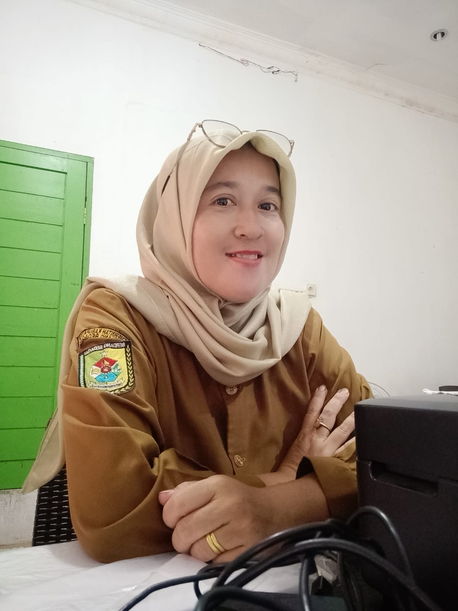
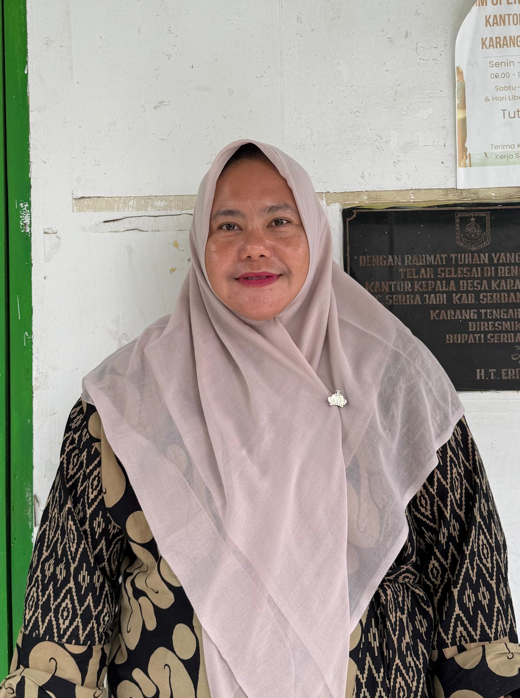
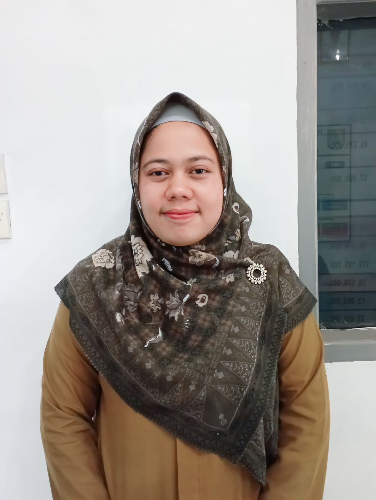
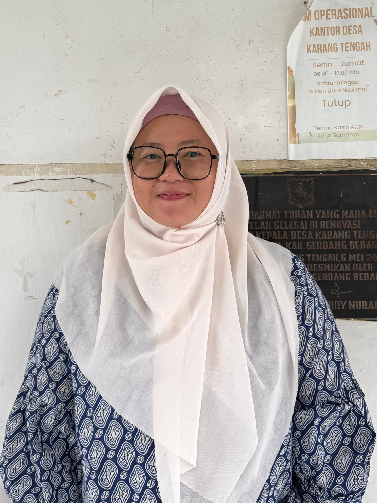
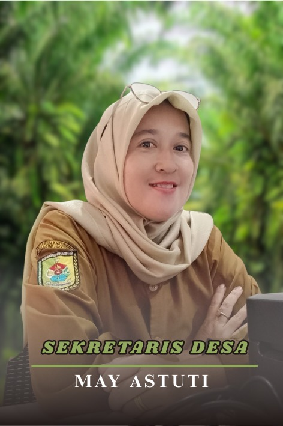
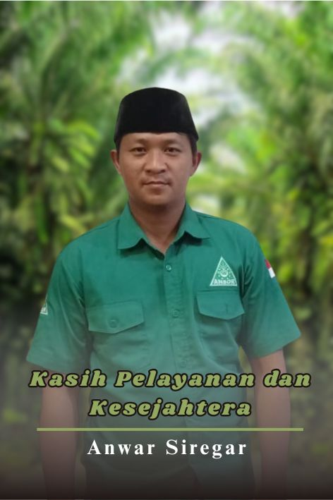
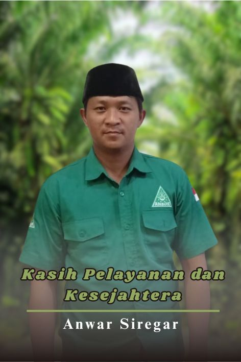
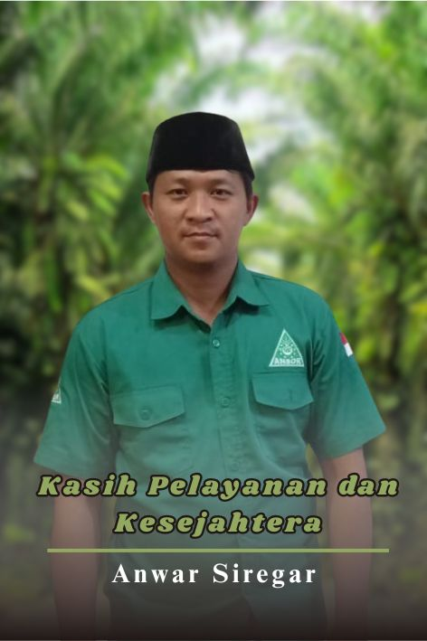

Pemerintah Desa
Antariman Saragih, S.H
PJ. Kepala Desa

May Astuti
Sekretaris Desa

Ratna Robia Dewi Br Ginting
KAUR Umum dan Perencaan

Tri Ramayani
KAUR Keuangan Desa

Anwar Siregar
KASI Kesejahteraan dan Pelayanan

Juli Afika
KASI Pemerintahan Desa
Alfina Khaira
Operator Desa
Herijal
Kepala Dusun I
Wiwi Susanti
Kepala Dusun II
Risanti Wahyuni
Kepala Dusun III
Wardono
Kepala Dusun IV
September 2025
Statistik Desa
POPULASI
1930
969 Laki-laki | 961 Perempuan
Aparatur Desa



 

